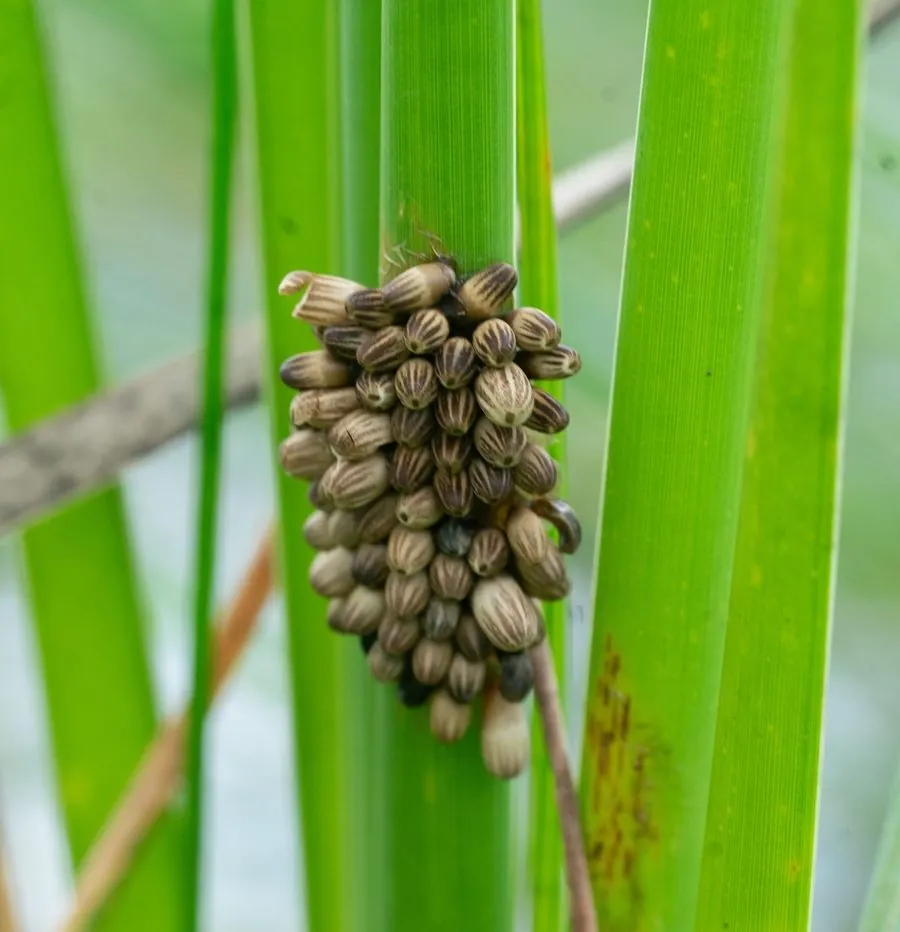

昆虫 · 动物界
田鳖 Kirkaldyia deyrolli

水生的大型蝽类，体扁呈褐色、前足如钳，捕食鱼苗和蛙类，被咬时疼痛剧烈，雄虫还会背负卵块保护后代。
- 分类
- 门节肢动物门纲昆虫纲目半翅目科负子蝽科属田鳖属
- 栖息环境
- 池塘、稻田、沼泽与流速缓慢的溪流，常潜伏于水草间
- 地理分布
- 东亚，中国、日本、朝鲜半岛及东南亚部分地区
- 保护级别
- 暂无评估
物种志
田鳖成虫体长 4.5–7.0 cm，是体型较大的水生蝽类。它的身体扁而宽，呈褐色至灰褐色，前足特化成镰刀状的捕捉足，中足和后足扁平如桨，适合游泳；腹部末端有一根短呼吸管，可伸出水面呼吸。
田鳖分布于东亚，包括中国、日本、朝鲜半岛和东南亚部分地区，栖息于池塘、稻田、沼泽和流速缓慢的溪流。它是凶猛的捕食者，捕食鱼苗、蛙类、蝌蚪、水生昆虫甚至小蛇，常潜伏在水草间伏击，用刺吸式口器注入消化液后吸食猎物。田鳖的咬伤非常疼痛，被捕捉时需小心。繁殖期雌虫将卵产在雄虫背上，雄虫背负卵块直到孵化，是少见的雄性护卵行为。由于水污染和栖息地减少，田鳖在部分地区的数量下降。
形态与习性
- 食性鱼苗、蛙类、蝌蚪、水生昆虫甚至小蛇
- 体长成虫 4.5–7.0 cm
- 形态前足镰刀状捕捉足，后足扁平如桨
- 呼吸腹部末端有短呼吸管，可伸出水面
- 繁殖雌虫产卵于雄虫背上，雄虫护卵至孵化
- 防御被咬时疼痛剧烈，捕捉需小心
趣味知识
- 田鳖的咬伤非常疼痛，是水生昆虫中最痛的一种。
- 雌田鳖把卵产在雄虫背上，由雄虫背负直到孵化。
- 它的前足像镰刀，用来捕捉鱼苗和蛙类。
- 田鳖腹部末端有呼吸管，可以伸出水面换气。